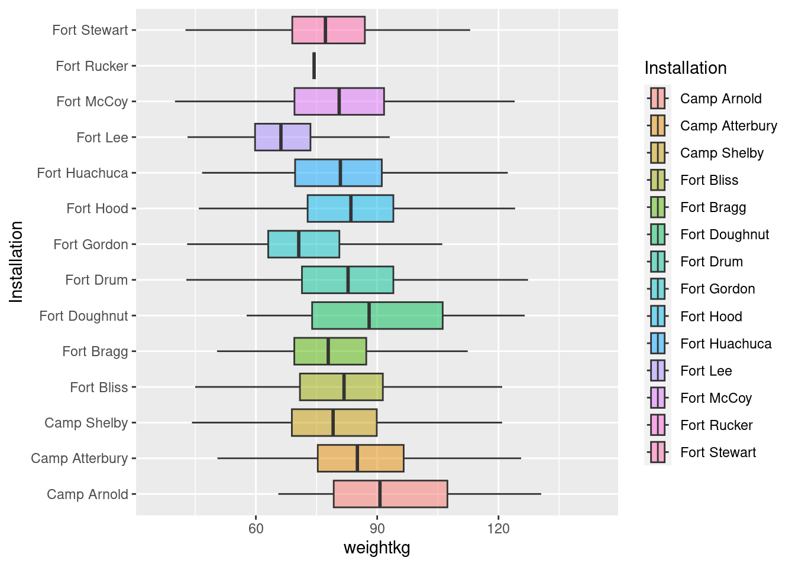

Extra Material
Diving Deeper into ggplot2 Extensions
ggplot2 stands as a cornerstone for data visualization in R. But the richness of the R ecosystem extends far beyond its foundational tools. Complementing the core offerings of ggplot2 is a suite of powerful extension packages, each designed to elevate and refine your visualization experiences.
In this section, we’ll journey through three particularly impactful extensions: gganimate, ggiraph, and ggside.
Twist!
While our exploration in this section will be guided, it comes with a twist. We’ll be immersing ourselves in blogs and webpages from the broader R community. The aim? To prepare you for a future where you will explore the R ecosystem independently.
Here is a brief introduction to three packages. Start with the one you find most interesting.
gganimate
Breathe life into your static plots by transforming them into animations. Whether you’re showcasing trends over time or simply adding a dynamic touch to your visuals, gganimate is your go-to tool.
ggiraph
Make your plots interactive! With ggiraph, you can create hover-over effects, clickable elements, and other interactive features that make your plots more engaging and informative.
ggside
Expand the canvas of your data stories by crafting marginal plots alongside your primary visualization. With ggside, you can seamlessly incorporate histograms, density plots, or boxplots directly adjacent to your main plot. Whether it’s enriching a scatterplot with marginal distributions or adding supplementary insights, ggside offers that extra dimension to your visual narratives.

1 gganimate
Most packages have a webpage where the package and its core functions are introduced. Head the gganimate website and read the getting started section. Then continue to exercises here where we will practice using the soldiers dataset that you already know.
You need to install gganimate
Installing
gganimate
install.packages("gganimate")Code
# Load libraries
library(tidyverse) # Data wrangling and plots
library(here) # File control in project
library(gganimate) # Animate plots
# Load the cleaned soldiers dataset
source(here("scripts", "01_import.R"))Animate this plot so its shows difference between men and women
soldiers %>%
ggplot(aes(x = weightkg, y = Installation, fill = Installation))+
geom_boxplot(outlier.shape = NA,
alpha = 0.5)
- Assign the animation to an object
Code
# One option
my_animation <- soldiers %>%
ggplot(aes(x = weightkg, y = Installation, fill = Installation))+
geom_boxplot(outlier.shape = NA,
alpha = 0.5)+
transition_states(sex,
transition_length = 1,
state_length = 2)+
labs(title = "Weight in Kgs of male and female soldiers",
subtitle = "Now showing {closest_state}")
my_animationCode
# Another option
soldiers %>%
ggplot(aes(x = weightkg, y = Installation, fill = Installation, seq_along = sex))+
geom_boxplot(outlier.shape = NA,
alpha = 0.5)+
labs(title = "Weight in Kgs of male and female soldiers",
subtitle = "Now showing {closest_state}")+
transition_states(sex,
transition_length = 0.5,
state_length = 2)+
enter_fade()+
exit_fly()Save your animation in the plots folder you created earlier
Code
anim_save(
filename = here("plots", "my_animation.gif"),
animation = my_animation
)Oxboys data
Load thenlme package and examine the Oxboys dataset that it comes with.
You might need to install the nlme package first.
Code
library(nlme)
head(Oxboys)
?OxboysCreate an animation that shows how height changes with age
- Use
transition_reveal()
Code
Oxboys %>%
ggplot(aes(x = age, y = height))+
# geom_boxplot(fill = "steelblue",
# alpha = 0.5,
# width = 0.3,
# outlier.shape = NA)+
geom_line(aes(group = Subject), color = "grey", alpha = 1)+
geom_point(aes(group = Subject))+
labs(x = "Standardized age \n(years)",
y = "Height\n(cm)")+
theme_classic()+
transition_reveal(age)2 ggiraph
Another useful resource for learning R is blogposts. These are often written in a much more accesible language. For learning ggiraph we will use a blogpost written by Albert Rapp. Head to his blogpost about ggiraph and read it. You don’t need to read the sections about shinyapps. When you have done that continue to exercises below.
You need to install ggiraph.
Installing
ggiraph
install.packages("ggiraph")Load the tidyverse, here, ggiraph, patchwork, and the cleaned soldiers dataset
Code
# Load libraries
library(tidyverse) # Data wrangling and plots
library(here) # File control in project
library(ggiraph) # Interactive plots
library(patchwork) # Combining plots
# Load the cleaned soldiers dataset
source(here("scripts", "01_import.R"))Explore Fort Hood, Camp Arnold, and Fort Doughnut
- Filter you data to the three camps
- Make a interactive boxplot that shows the name of the installation
Hint
You can use the base R functions paste() or paste0() to combine text and values in your tooltip.
You can also use glue() from the glue package, but you need to install that package first. In the blogpost Albert uses the glue() function.
Size of your interactive plot
With the default options, the interactive plots tends to be oversized. Add this option to reduce it
girafe(ggobj = my_plot,
options = list(opts_sizing(rescale = FALSE)))Code
my_plot <- soldiers %>%
filter(Installation %in% c("Fort Hood", "Camp Arnold", "Fort Doughnut")) %>%
ggplot(aes(x = BMI, y = Installation, fill = Installation))+
geom_boxplot_interactive(
aes(tooltip = paste0("This is the ", Installation, " installation")))+
labs(y = NULL)+
theme_classic()
girafe(ggobj = my_plot)Add an interactive geom_jitter layer.
- facet the plot on sex
- Make a tooltip that gives you the subjectid, BMI, height, weight, biceps circumference, and waist circumference.
Hint line breaks
“\n” Gives you a line break
Code
my_plot <- soldiers %>%
filter(Installation %in% c("Fort Hood", "Camp Arnold", "Fort Doughnut")) %>%
ggplot(aes(x = BMI, y = Installation, fill = Installation))+
facet_wrap(~sex, ncol = 1)+
labs(y = NULL)+
geom_boxplot_interactive(
aes(tooltip = paste0("This is the ", Installation, " installation")),
outlier.shape = NA) +
geom_jitter_interactive(
aes(tooltip = paste0("Subjectid: ", subjectid,
"\n BMI: ", round(BMI), " (", category, ")",
"\nHeight: ", round(heightcm), " cm",
"\nWeight: ", round(weightkg), " kg",
"\nBiceps: ", round(bicepscircumference), " mm",
"\nWaist: ", round(waistcircumference), " mm")),
height = 0.2,
alpha = 0.3,
shape = 21
)+
theme_classic()
girafe(ggobj = my_plot,
options = list(opts_sizing(rescale = FALSE)))Create another interactive plot with geom_jitter_interactive()
- Combine your new plot with the one you made above using
patchwork - Set the data_id argument to:
data_id = subjectidfor the points - Use the options that Alfred suggested in his post (see tip below)
Options
girafe(ggobj = my_plot,
options = list(
opts_hover(css = ''),
opts_hover_inv(css = "opacity:0.2;"),
opts_sizing(rescale = FALSE)
))Code
my_plot_a <- soldiers %>%
filter(Installation %in% c("Fort Hood", "Camp Arnold", "Fort Doughnut")) %>%
ggplot(aes(x = BMI, y = Installation, fill = Installation, ))+
facet_wrap(~sex, ncol = 1)+
labs(y = NULL,
x = NULL,
title = "BMI")+
geom_boxplot_interactive(
aes(data_id = Installation,
tooltip = paste0("This is the ", Installation, " installation")),
outlier.shape = NA) +
geom_jitter_interactive(
aes(data_id = subjectid,
tooltip = paste0("Subjectid: ", subjectid,
"\n BMI: ", round(BMI), " (", category, ")",
"\nHeight: ", round(heightcm), " cm",
"\nWeight: ", round(weightkg), " kg",
"\nBiceps: ", round(bicepscircumference), " mm",
"\nWaist: ", round(waistcircumference), " mm")),
height = 0.2,
alpha = 0.5,
shape = 21
)+
theme_classic()
my_plot_b <- soldiers %>%
filter(Installation %in% c("Fort Hood", "Camp Arnold", "Fort Doughnut")) %>%
ggplot(aes(x = waistcircumference, y = Installation, fill = Installation))+
facet_wrap(~sex, ncol = 1)+
labs(y = NULL,
x = NULL,
title = "Waist circumference")+
geom_boxplot_interactive(
aes(data_id = Installation,
tooltip = paste0("This is the ", Installation, " installation")),
outlier.shape = NA) +
geom_jitter_interactive(
aes(data_id = subjectid,
tooltip = paste0("Subjectid: ", subjectid,
"\n BMI: ", round(BMI), " (", category, ")",
"\nHeight: ", round(heightcm), " cm",
"\nWeight: ", round(weightkg), " kg",
"\nBiceps: ", round(bicepscircumference), " mm",
"\nWaist: ", round(waistcircumference), " mm")),
height = 0.2,
alpha = 0.5,
shape = 21
)+
theme_classic()
my_plot <- my_plot_a + my_plot_b +
plot_layout(guides = "collect") &
theme(legend.position='bottom')
girafe(ggobj = my_plot,
options = list(
opts_hover(css = ''),
opts_hover_inv(css = "opacity:0.2;"),
opts_sizing(rescale = FALSE)
))